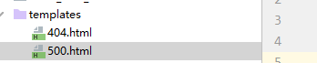
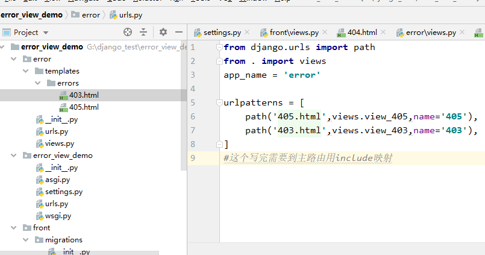

错误处理
在一些网站开发中。经常会需要捕获一些错误，然后将这些错误返回比较优美的界面，或者是将这个错误的请求做一些日志保存。那么我们本节就来讲讲如何实现。
常用的错误码：
404：服务器没有指定的url。403：没有权限访问相关的数据。405：请求的method错误。400：bad request，请求的参数错误。500：服务器内部错误，一般是代码出bug了。502：一般部署的时候见得比较多，一般是nginx启动了，然后uwsgi有问题。
错误处理的时候，必须将settings里的debug改为false
自定义错误模板：
在碰到比如404，500错误的时候，想要返回自己定义的模板。那么可以直接在templates文件夹下创建相应错误代码的html模板文件。那么以后在发生相应错误后，会将指定的模板返回回去。

错误处理的解决方案：
对于404和500这种自动抛出的错误。我们可以直接在templates文件夹下新建相应错误代码的模板文件。而对于其他的错误，我们可以专门定义一个app，用来处理这些错误。
